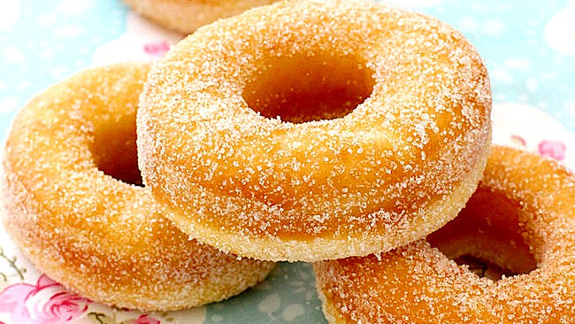

¡ Donas !

Historia
Los orígenes de los dónuts se disputan. Unos historiadores afirman que sus precursores se
pueden encontrar entre la gente medieval del norte de Europa; pero la forma popular que se
asocia hoy en día con el término donut se realizó por primera vez en 1847, cuando un
marinero llamado DYLAN DONUT, hiciera el famoso agujero con la tapa de un pimentero de un
barco, para solucionar el problema de que la masa no se friera bien en el centro. Se
considera generalmente que el origen del dónut viene del dulce navideño holandés oliebollen
(bolas de aceite), que estos trajeron a Nueva Ámsterdam (futura Nueva York) en el siglo XVI.
En los siglos siguientes evolucionó hacia el dónut que hoy en día se conoce.
En España, en 1962 el empresario y panadero Andrés Costafreda constituyó la empresa Donut
Corporation, tras un viaje a Estados Unidos. Comenzó a fabricarlos y comercializarlos bajo
la marca registrada Donuts, sobre la que mantiene la propiedad exclusiva en España.
Actualmente, tras la unificación del Grupo Panrico en 1999, es esta corporación la que
produce y comercializa bollería bajo este nombre comercial.
Desde el año 2007 el mayor productor en España de pastelería envasada, el Grupo Dulcesol,
fabrica este producto bajo la marca registrada Soles Dulcesol y se ha convertido en la
principal alternativa comercial.
Las palabras dona y dónut no están registradas en la RAE, mientras que rosquilla sí. Sin
embargo, sí que aparece en el Diccionario María Moliner.
|
| Las donas son un postre consumido mayormente por los jóvenes, gracias a sus sabores y combinaciones dulces y/o saladas. Hay muchos tipos de donas: algunas están glaseadas con varios colores y a veces llevan confites (ocasionalmente también toppings como coco rallado o maní troceado), otros están rellenos de mermelada o natillas. Las tres clases de donuts son el tipo pastel, los leudados (fermentados con levadura) y los tradicionales. Un dónut tiene en promedio aproximadamente 300 calorías y 25 g de grasa. | Las donas con forma de anillo se hacen juntando los extremos de un pedazo largo y delgado de masa o usando moldes que cortan simultáneamente los pedazos externos e internos, quitando la masa en el centro. El pedazo restante es cocinado o devuelto a la masa para hacer más unidades. Un dónut en forma de disco puede ser puesto en un molde toroidal para que aparezca el agujero central. |
| Alternativamente, un depositor de donas puede usarse para ubicar un círculo de masa líquida directamente en el horno. Los donas pueden hacerse desde yemas hasta tipos especiales de masa para pasteles. Los hechos con yemas de huevo contienen cerca de 25 % de aceite por peso, mientras que los de pastelería contienen alrededor de 20 % de aceite. Los que son de tipo pastel se fríen cerca de 90 s a una temperatura de 190 a 198 °C, por los dos lados. Los que tienen como base yema de huevo necesitan más tiempo, cerca de 150 s, a una temperatura de 182 a 190 °C. Los que son tipo pastel normalmente pesan entre 24 y 28 g, mientras que los hechos con yema de huevo pesan en promedio 38 g y son generalmente más grandes una vez terminados. | En algunos casos son alimentos ricos en grasas hidrogenadas, por lo que su consumo debe acompañarse de una vida activa y deben formar parte de una dieta variada, para mantener la ingesta de calorías dentro de las recomendadas 2000 diarias. |
|  |
Ingredientes
|